2.2 · Mô hình MapReduce
Đầu vào
Kho tài liệu được chia trên nhiều máy.
Đầu ra
Mỗi từ đã xuất hiện đi kèm tổng số lần xuất hiện.
Map phát đóng góp → hệ thống nhóm theo khóa → reduce tổng hợp.
Lợi ích của MapReduce
| Lợi ích | Cơ chế |
|---|
| Song song trên nhiều máy | Chia dữ liệu thành nhiều phần việc để xử lý đồng thời |
| Mở rộng bằng thêm máy | Bổ sung máy phổ thông để tăng năng lực xử lý |
| Tự phục hồi lỗi máy | Phát hiện lỗi, giao lại phần việc bị ảnh hưởng |
| Lập trình gọn hơn | Viết Map/Reduce; hệ thống lo phân phối và điều phối |
| Xử lý gần dữ liệu | Ưu tiên Map gần bản sao đầu vào để giảm truyền mạng |
Lập trình viên mô tả phép tính; hệ thống tổ chức việc thực thi.
Mỗi lần xuất hiện tạo một đóng góp
| Tài liệu | Cặp map phát |
|---|
| dữ liệu lớn | (dữ,1), (liệu,1), (lớn,1) |
| lớn lớn | (lớn,1), (lớn,1) |
Câu hỏi: Từ “lớn” tạo bao nhiêu cặp trước khi nhóm?
Nhóm theo khóa rồi cộng
| Khóa | Giá trị nhận được | Kết quả |
|---|
| dữ | [1] | (dữ,1) |
| liệu | [1] | (liệu,1) |
| lớn | [1,1,1] | (lớn,3) |
Mọi đóng góp của một từ về cùng một nhóm.
Hai hàm của MapReduce
$\operatorname{Map}: K_1 \times V_1 \to \operatorname{List}(K_2 \times V_2)$
$\operatorname{Reduce}: K_2 \times \operatorname{List}(V_2) \to \operatorname{List}(K_3 \times V_3)$
$K_i$: miền khóa; $V_i$: miền giá trị.
Chỉ số $1$: đầu vào; $2$: trung gian; $3$: đầu ra.
$\operatorname{List}(X)$: danh sách hữu hạn phần tử thuộc $X$;
giữ phần tử lặp, cho phép danh sách rỗng.
Hệ thống MapReduce nối hai hàm này bằng bước nhóm theo khóa.
Từ Map đến Reduce
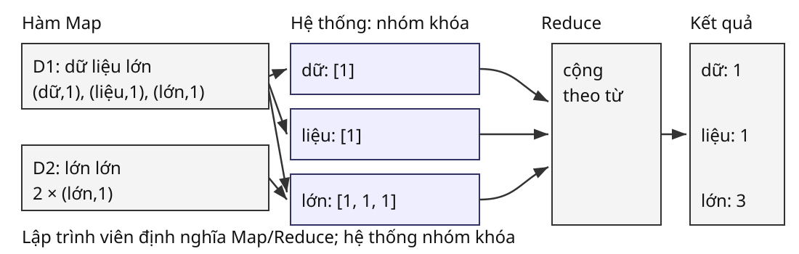
Map phát từng đóng góp; hệ thống gom đủ; Reduce cộng theo từ.
Thuật toán đếm từ
Giả thiết: tách theo khoảng trắng; bộ đếm không tràn; hệ thống nhóm đủ và đúng khóa.
map(tài_liệu):
với mỗi từ w:
phát(w, 1)
reduce(w, V):
s ← 0
với mỗi v trong V:
s ← s + v
phát(w, s)
Bộ đếm trả đúng số lần xuất hiện
Mệnh đề: mỗi từ xuất hiện được trả cùng số lần xuất hiện của nó.
| Bước | Lập luận |
|---|
| Map và nhóm | Mỗi lần xuất hiện tạo một số 1 về đúng từ. |
| Khởi tạo | $s=0$: tổng của danh sách rỗng. |
| Sau $j$ lần cộng | $s$ bằng tổng $j$ giá trị đã đọc. |
| Khi hết danh sách | $s$ là tổng mọi đóng góp của từ. |
Dữ liệu hữu hạn nên dừng. Kho rỗng trả đầu ra rỗng.
Gộp cục bộ trước khi truyền
D2 chưa gộp
(lớn,1), (lớn,1)
Toàn ví dụ: 5 cặp → 4 cặp; tổng cuối vẫn là (lớn,3).
Phép cộng giữ cùng ý nghĩa, có tính kết hợp và giao hoán. Reduce phải đúng cả khi bộ kết hợp không chạy.
Trung bình cần giữ (tổng, số lượng), rồi chia ở cuối.
Khóa, tác vụ và máy
| Đơn vị | Vai trò trong thực thi |
|---|
| Hàm Map / Reduce | Mã do lập trình viên định nghĩa |
| Tác vụ Map / Reduce | Phần công việc được giao để thực hiện |
| Tiến trình thực thi (Worker) | Chạy tác vụ trên một máy |
| Bộ điều phối (Master) | Tạo, phân công và theo dõi các tác vụ |
Một tác vụ Reduce gọi hàm Reduce cho từng khóa được giao.
Một máy có thể lần lượt chạy nhiều tác vụ.
Tạo tác vụ Map từ dữ liệu đầu vào
Chương trình chọn số tác vụ; bộ điều phối tạo công việc.
Cách thường dùng: một tác vụ Map cho mỗi phần dữ liệu.
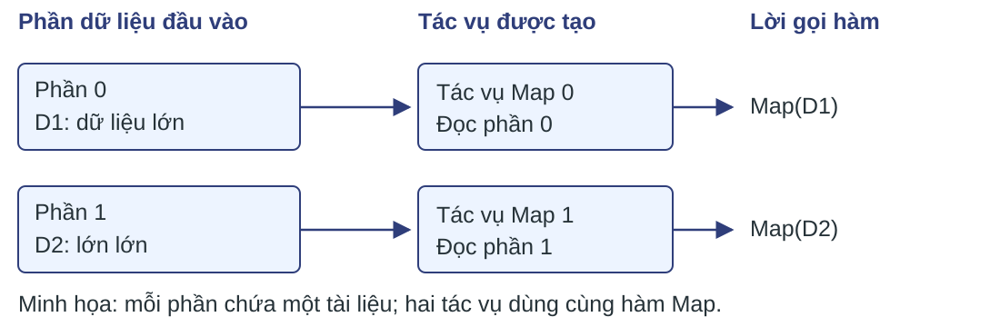
Một phần có thể chứa nhiều tài liệu; hàm Map được gọi cho từng tài liệu.
Phân chia khóa cho các tác vụ Reduce
Chọn $r$ tác vụ Reduce; hàm $h(k)$ chọn một tác vụ từ $0$ đến $r-1$.
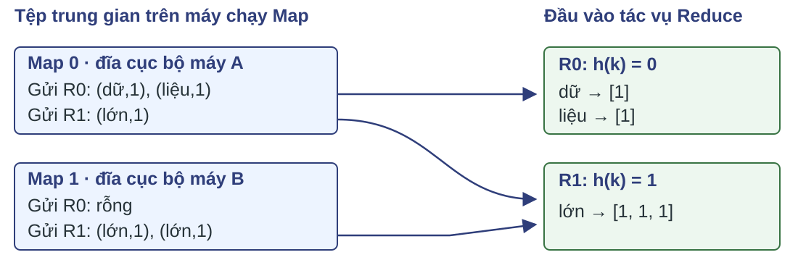
Cùng khóa phải về cùng tác vụ; một tác vụ có thể nhận nhiều khóa.
Bộ điều phối phân bổ tác vụ lên máy
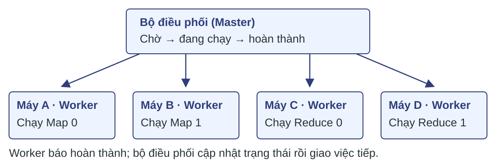
Ưu tiên chạy Map gần dữ liệu đầu vào.
Tác vụ chờ được giao tiếp khi Worker phù hợp rảnh.
Lưu trữ quyết định phần cần chạy lại
| Dữ liệu | Nơi lưu trong mô hình sách | Khi máy thực thi hỏng |
|---|
| Đầu vào Map | Hệ tệp phân tán, có bản sao | Còn nguồn để đọc lại |
| Trung gian Map | Đĩa cục bộ của máy chạy Map | Có thể mất nơi Reduce cần đọc |
| Kết quả Reduce đã xong | Hệ tệp phân tán | Được giữ nhờ lớp lưu trữ |
Bộ điều phối kiểm tra Worker định kỳ; khi phát hiện lỗi, đưa các tác vụ bị ảnh hưởng về trạng thái chờ.
Phục hồi khi máy Map hỏng
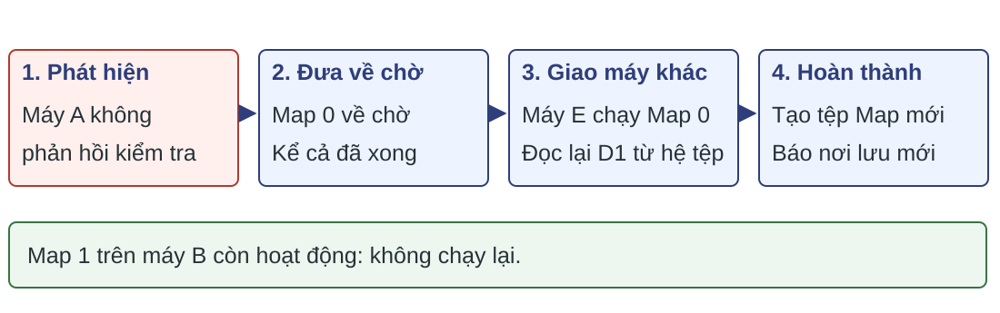
Mất tệp trung gian cục bộ: cả Map đã hoàn thành cũng phải chạy lại.
Câu hỏi: Tại sao tác vụ Map đã hoàn thành vẫn phải chạy lại?
Phục hồi khi máy Reduce hỏng
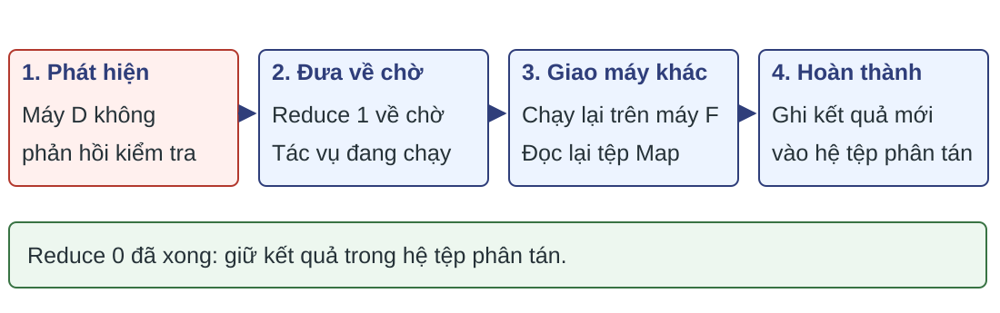
Chỉ chạy lại tác vụ Reduce đang thực hiện trên máy hỏng.
Câu hỏi: Reduce 0 đã hoàn thành có phải chạy lại không?
Nếu máy bộ điều phối hỏng: khởi động lại toàn bộ công việc theo mô hình sách.
Bài tập 2.2.1(a) · Lệch tải khi chưa gộp
Kho tài liệu rất lớn, chẳng hạn một bản sao kho trang Web; đếm từ bằng 100 tác vụ Map.
Câu hỏi: Không dùng bộ kết hợp. Thời gian xử lý danh sách của các reducer có lệch đáng kể không? Giải thích.
Sản phẩm: giải thích bằng độ dài danh sách và cách gán khóa.
Bài tập 2.2.1(b) · Gom reducer vào tác vụ
Kho tài liệu rất lớn, chẳng hạn một bản sao kho trang Web; đếm từ bằng 100 tác vụ Map.
Câu hỏi: Gán ngẫu nhiên các reducer vào 10 tác vụ Reduce. So sánh mức lệch với cách gán vào 10000 tác vụ Reduce.
Sản phẩm: giải thích bằng độ dài danh sách và cách gán khóa.
Bài tập 2.2.1(c) · Tác động của bộ kết hợp
Kho tài liệu rất lớn, chẳng hạn một bản sao kho trang Web; đếm từ bằng 100 tác vụ Map.
Câu hỏi: Dùng bộ kết hợp tại cả 100 tác vụ Map. Mức lệch có còn đáng kể không? Giải thích.
Sản phẩm: giải thích bằng độ dài danh sách và cách gán khóa.
Tiếp: bài tập thiết kế thuật toán
2.3 · Nhân ma trận–vector
Ma trận liên kết Web có thể quá lớn để giữ trên một máy. Ta lưu các phần tử khác không bằng bộ $(i,j,m_{ij})$.
Đầu vào: ma trận $M$ cỡ $n\times n$, vector $v$ dài $n$.
$i$: hàng; $j$: cột; $1\le i,j\le n$.
Đầu ra: $x=Mv$.
Mỗi hàng cần một tổng các tích:
$x_i=\sum_{j=1}^{n}m_{ij}v_j$.
Khóa hàng gom đúng các tích
Xét hàng $i$; gọi $p_j=m_{ij}v_j$ là đóng góp của cột $j$.
| Đọc phần tử | Cặp Map phát | Tổng sau khi nhận |
|---|
| Chưa đọc | Chưa có | $s=0$ |
| $(i,1,m_{i1})$ | $(i,p_1)$ | $s=p_1$ |
| $(i,2,m_{i2})$ | $(i,p_2)$ | $s=p_1+p_2$ |
| Các phần tử còn lại | Cùng khóa $i$ | $s=\sum_j p_j=x_i$ |
Thứ tự cột ở đây dùng để chạy tay; hệ thống có thể giao các tích theo thứ tự khác.
Giả mã nhân ma trận–vector
Điều kiện: mỗi tác vụ giữ được $v$ trong bộ nhớ; xét số học chính xác.
map(i,j,m): phát(i, m × v[j])
reduce(i,V):
s ← 0
với mỗi p trong V: s ← s + p
phát(i, s)
Mỗi tích được phát đúng một lần; nhóm theo $i$ thu đủ tích của hàng. Bất biến cộng tổng cho $s=x_i$ khi dừng.
Vị trí không lưu bằng 0; hàng không phát cặp được hiểu là $x_i=0$.
Chia dải khi vector không vừa bộ nhớ
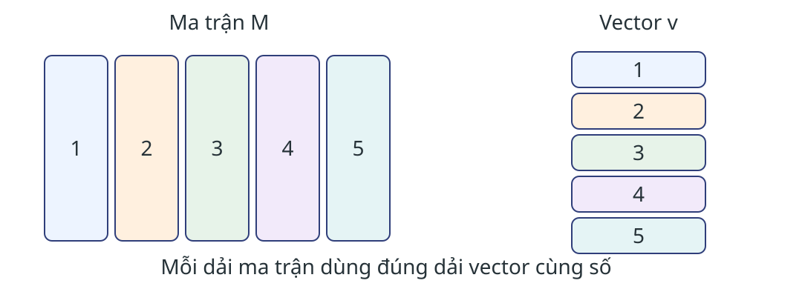
Chọn dải vector vừa bộ nhớ tác vụ. Các dải phủ hết cột, không giao nhau; mọi tích vẫn mang khóa hàng $i$.
Bài tập 2.3.1(a) · Số nguyên lớn nhất
Đầu vào: một tệp số nguyên rất lớn. Khóa đầu ra có thể bị bỏ qua.
Câu hỏi: Thiết kế MapReduce để trả số nguyên lớn nhất.
Sản phẩm: map/reduce, trạng thái trung gian và lập luận đúng.
Bài tập 2.3.1(b) · Trung bình các số nguyên
Đầu vào: một tệp số nguyên rất lớn. Khóa đầu ra có thể bị bỏ qua.
Câu hỏi: Thiết kế MapReduce để trả trung bình các số nguyên.
Sản phẩm: map/reduce, trạng thái trung gian và lập luận đúng.
Bài tập 2.3.1(c) · Mỗi số chỉ xuất hiện một lần
Đầu vào: một tệp số nguyên rất lớn. Khóa đầu ra có thể bị bỏ qua.
Câu hỏi: Thiết kế MapReduce để trả mỗi số chỉ xuất hiện một lần.
Sản phẩm: map/reduce, trạng thái trung gian và lập luận đúng.
Bài tập 2.3.1(d) · Số lượng giá trị khác nhau
Đầu vào: một tệp số nguyên rất lớn. Khóa đầu ra có thể bị bỏ qua.
Câu hỏi: Thiết kế MapReduce để trả số lượng giá trị khác nhau.
Sản phẩm: map/reduce, trạng thái trung gian và lập luận đúng.
Tiếp: bài tập tính chi phí
2.4 · Luồng công việc nhiều hàm
Hệ luồng công việc dùng đồ thị có hướng không chu trình. Cung a → b: đầu ra của a cung cấp đầu vào cho b.
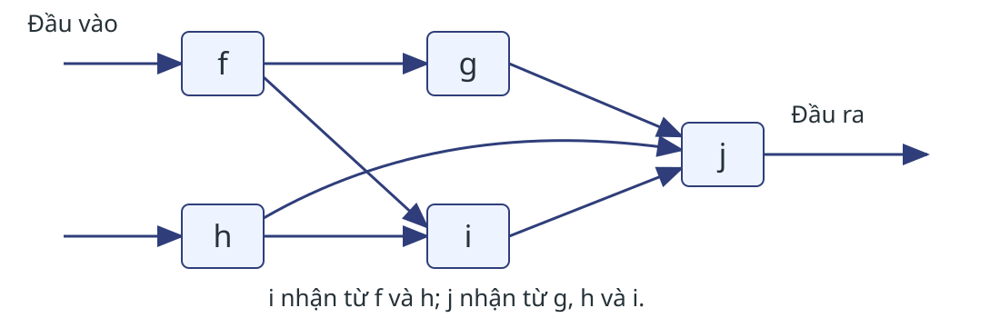
Mỗi hàm có nhiều tác vụ. Theo mô hình sách, tác vụ chỉ chuyển đầu ra sau khi hoàn thành; hỏng trước đó thì chạy lại.
Spark: Map và Flatmap
Tập dữ liệu phân tán có khả năng khôi phục (RDD): các phần tử cùng kiểu, chia trên nhiều máy.
Dùng lại D2 = “lớn lớn”; hàm tách tạo hai cặp giống nhau.
| Phép biến đổi | Các phần tử đầu ra từ D2 | Số phần tử |
|---|
| Map | [(lớn,1), (lớn,1)] | 1 danh sách |
| Flatmap | (lớn,1) và (lớn,1) | 2 cặp |
Map trả đúng một đối tượng; Flatmap trả không, một hoặc nhiều phần tử. Các lần xuất hiện trùng nhau vẫn được giữ.
Nối Flatmap với Filter
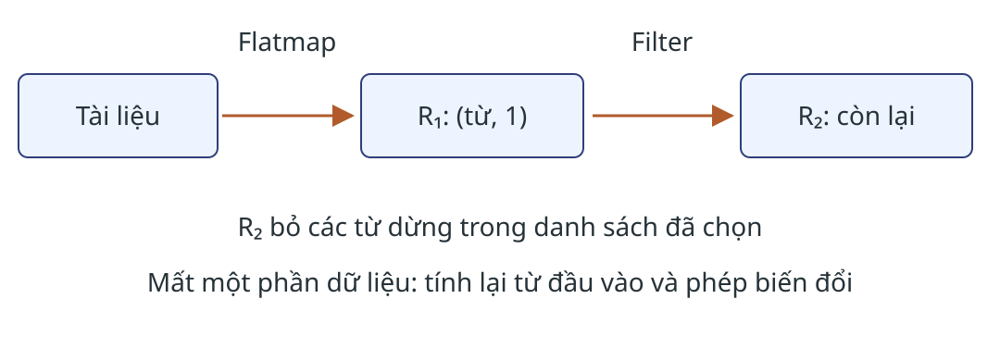
Câu hỏi: Một từ dừng xuất hiện ba lần; R₂ còn bao nhiêu cặp của từ đó?
Đánh giá lười và dòng dõi
- Phép biến đổi ghi cách tạo dữ liệu; hành động kích hoạt việc tính.
- Lưu đệm giúp dùng lại phần dữ liệu đã tính.
- Lịch sử biến đổi cho phép tính lại phần bị mất.
Câu hỏi: R₂ bị mất; hãy nêu thứ tự áp dụng phép biến đổi từ tệp tài liệu.
Vai trò lưu trữ và thực thi
| Lớp | Trách nhiệm |
|---|
| Hệ tệp phân tán | Lưu khối và bản sao |
| MapReduce / Spark | Phân chia, lập lịch, khôi phục tác vụ |
Reduce của Spark trả một giá trị tổng hợp; reduce của MapReduce được gọi theo khóa.
Đọc thêm: TensorFlow, tính toán đệ quy, đồng bộ theo từng bước.
2.5 · Quy ước tính chi phí
| Thành phần mô hình | Quy ước của mục 2.5 |
|---|
| Đại lượng và phạm vi | Tổng kích thước đầu vào mọi tác vụ của thuật toán |
| Đơn vị | Byte; hoặc bộ/cặp chuẩn hóa cùng một đơn vị |
| Đọc và sao chép | Mỗi lần nhận tính một lần, kể cả đọc cục bộ |
| Đầu ra cuối | Chỉ tính khi được một tác vụ tiếp theo đọc |
Đây là mô hình so sánh lượng dữ liệu; thời gian hoàn thành còn phụ thuộc tải, CPU và bộ nhớ.
Cộng dữ liệu mà mỗi tầng nhận
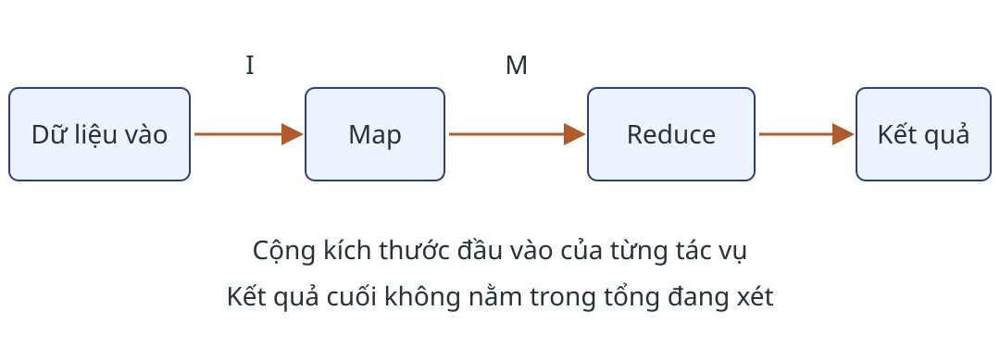
$I$: tổng kích thước đầu vào Map; $M$: tổng kích thước đầu vào Reduce, cùng đơn vị.
$C=\sum_{\text{tác vụ }u}|\operatorname{in}(u)|=I+M$
$M$ ở đây là kích thước trung gian, không phải ma trận.
Đếm từ: theo dữ liệu qua hai tầng
$I$ tính bằng byte; giả sử mỗi cặp trung gian dài $B$ byte.
| Đại lượng | Chưa gộp | Có gộp trong D2 |
|---|
| Đầu vào Map | $I$ | $I$ |
| Cặp đến Reduce | 5 | 4 |
| Chi phí (byte) | $I+5B$ | $I+4B$ |
Ma trận–vector: đếm đầu vào từng tầng
Không gộp cục bộ; dùng đơn vị bản ghi chuẩn hóa.
$z$: số phần tử ma trận được lưu; $L_j$: độ dài dải vector $j$;
$a_j$: số tác vụ Map đọc dải đó.
| Nơi nhận | Lượng dữ liệu | Lý do |
|---|
| Map: ma trận | $z$ | Mỗi phần tử đọc một lần |
| Map: vector | $\sum_j a_jL_j$ | Dải $j$ được đọc $a_j$ lần |
| Reduce | $z$ | Mỗi phần tử tạo một tích |
Chi phí đọc lặp dải vector
Cộng ba dòng trong bảng đầu vào:
$C=2z+\sum_j a_jL_j$
| Cách phân công | Chi phí chuẩn hóa |
|---|
| Mỗi dải có một tác vụ; tổng độ dài là $n$ | $2z+n$ |
| Mỗi dải có $a$ tác vụ | $2z+an$ |
Chia thêm tác vụ có thể làm tăng số lần đọc vector.
Tổng chi phí và tải lớn nhất
Tổng
Cộng đầu vào của mọi tác vụ.
Cho biết lượng công việc truyền/đọc.
Tác vụ nặng nhất
Xem đầu vào và phép tính cục bộ.
Kiểm tra lệch khóa và bộ nhớ.
Câu hỏi: Tổng chi phí giảm có đủ để kết luận bài toán chạy nhanh hơn không?
Bài tập 2.5.1(a) · Nhân ma trận–vector
Xét thuật toán chia dải ở mục 2.3.2.
Câu hỏi: Biểu diễn chi phí truyền thông theo kích thước ma trận và vector.
Sản phẩm: bảng đầu vào Map/Reduce; nêu số lần đọc từng dải vector.
Trở về tổng kết
2.6 · Tìm các cặp ảnh tương tự
Đầu vào nguồn: $N=10^6$ ảnh, mỗi ảnh $B=10^6$ byte.
Cho hàm độ tương tự đối xứng $s(P_i,P_j)$ và ngưỡng $\tau$. Cần trả các cặp khác nhau có $s(P_i,P_j)>\tau$.
Mỗi reducer một cặp
Mỗi ảnh phải gửi đến nhiều nơi.
Mỗi reducer hai nhóm
Dùng lại ảnh đã nhận, nhưng cần giữ nhiều ảnh hơn.
Trong mô hình nguồn, phải tính độ tương tự cho mọi cặp; chưa có cách bỏ qua cặp.
Đầu vào mỗi reducer và số lần sao chép
| Ký hiệu | Ý nghĩa |
|---|
| $q$ | Số giá trị đầu vào tối đa của một reducer |
| $\rho$ | Số cặp trung gian trung bình trên một đầu vào |
$\rho=\frac{\text{tổng số cặp phát}}{\text{số đầu vào}}$
Giảm dữ liệu ở từng reducer có thể đòi hỏi gửi nhiều bản sao hơn.
Mỗi reducer xử lý một cặp ảnh
Với mỗi ảnh $(i,P_i)$, Map gửi nó tới khóa $\{i,j\}$ cho mọi $j\ne i$. Reducer của khóa đó nhận hai ảnh.
Reduce tính $s(P_i,P_j)$ và phát cặp nếu vượt $\tau$.
| Đếm | Kết quả |
|---|
| Ảnh mỗi reducer | $q=2$ |
| Nơi nhận mỗi ảnh | $\rho=N-1=999999$ |
| Byte trung gian | $N(N-1)B\approx10^{18}$ |
Phạm vi: dữ liệu ảnh Map gửi tới Reduce; chưa cộng đầu vào Map $NB$.
Gom nhóm để dùng lại mỗi ảnh
Chia đều $N=10^6$ ảnh vào $g=1000$ nhóm; mỗi nhóm có 1000 ảnh.
Map gửi ảnh thuộc nhóm $u$ tới mọi khóa $\{u,v\}$ với $v\ne u$. Mỗi reducer nhận hai nhóm.
| Đếm | Phép tính |
|---|
| Ảnh mỗi reducer | $q=2(N/g)=2000$ |
| Nơi nhận mỗi ảnh | $\rho=g-1=999$ |
| Byte trung gian | $N(g-1)B=9{,}99\cdot10^{14}$ |
Dùng lại ảnh đã nhận để so sánh nhiều cặp. Bước Reduce phải bao phủ cả cặp khác nhóm và cùng nhóm.
Bao phủ mọi cặp, mỗi cặp đúng một nơi
Cặp khác nhóm $u,v$ do reducer $\{u,v\}$ so sánh. Hình xét $v=(u+1)\bmod g$.
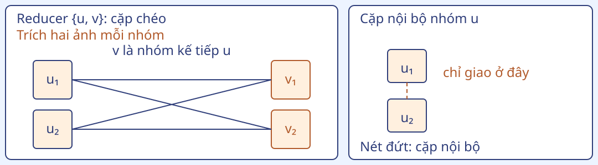
Nhóm đánh số $0,\ldots,g-1$, $g=1000$. Mỗi cặp được xét một lần; vẫn cần $N(N-1)/2$ phép so sánh.
Câu hỏi: Nếu bỏ quy tắc giao riêng, một cặp nội bộ bị xét mấy lần?
Đánh đổi cần kiểm tra trước khi triển khai
| Cách phân chia | Đầu vào/reducer | Bản sao/ảnh |
|---|
| Mỗi cặp ảnh | $2$ | $999999$ |
| Mỗi cặp nhóm | $2000$ | $999$ |
Câu hỏi: Với cách gom nhóm, 2 GB dữ liệu ảnh đã đủ để kết luận reducer chạy được chưa?
Đọc thêm: lược đồ ánh xạ và chứng minh cận dưới ở 2.6.3–2.6.7.